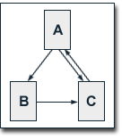
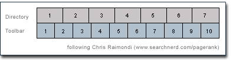

August 28, 2003
Google的PageRank算法学习

1、PageRank(网页级别)的概念
互联网发展早期的搜索引擎，对web页面的排序，是根据搜索的词组（短语）在页面中的出现次数（occurence ），并用页面长度和html标签的重要性提示等进行权重修订。链接名气(link popularity)技术通过其它文档链接到当前页面（inbound links）的链接数量来决定当前页的重要性，这样可以有效地抵制被人为加工的页面欺骗搜索引擎的手法。
PageRank计算页面的重要性，对每个链入(inbound)赋以不同的权值，链接提供页面的越重要则此链接入越高。当前页的重要性，是由其它页面的重要性决定的。
2、PageRank算法1
其中：PR(A):页面A的网页级别,
PR(Ti)：页面Ti的网页级别，页面Ti链向页面A，
C(Ti)：页面Ti链出的链接数量，
d：阻尼系数，取值在0－1之间.
由此可见，1）这个算法不以站点排序，页面网页级别由一个个独立的页面决定；2）页面的网页级别由链向它的页面的网页级别决定，但每个链入页面的贡献的值是不同的。如果Ti页面中链出越多，它对当前页面A的贡献就越小。A的链入页面越多，其网页级别也越高；3）阻尼系数的使用，减少了其它页面对当前页面A的排序贡献。
3、随机冲浪模型
Lawrence Page 和 Sergey Brin 提出了用户行为的随机冲浪模型，来解释上述算法。他们把用户点击链接的行为，视为一种不关心内容的随机行为。而用户点击页面内的链接的概率，完全由页面上链接数量的多少决定的，这也是上面PR(Ti)/C(Ti)的原因。一个页面通过随机冲浪到达的概率就是链入它的别的页面上的链接的被点击概率的和。阻尼系数d的引入，是因为用户不可能无限的点击链接，常常因劳累而随机跳入另一个页面。d可以视为用户无限点击下去的概率，（1－d）则就是页面本身所具有的网页级别。
4、PageRank算法2（对算法1的修订）
其中N是互联网上所有网页的数量
由此，所有页面的网页级别形成的一个概率分布，所有页面的网页级别之和是1。在算法1中，随机冲浪访问某个页面的概率由互联网的总页数决定，在算法2中，网页级别是一个页面被随机访问的期望值。
以下讲解，皆基于算法1，主要是计算简单，因为不用考虑N的值。
5、PageRank的特性
所有页面的网页级别之和等于互联网的总页数。在网页数比较少的情况下，网页级别方程可以解出，而面对互联网上成亿的网页，再解方程是不可能的。
 此处设阻尼系数为0.5，虽然Lawrence Page 和 Sergey Brin在实际将其设为0.85.
PR(B) = 0.5 + 0.5 (PR(A) / 2)
PR(C) = 0.5 + 0.5 (PR(A) / 2 + PR(B))
解得：
PR(A) = 14/13 = 1.07692308
PR(B) = 10/13 = 0.76923077
PR(C) = 15/13 = 1.15384615
有：
PR(A)+PR(B)+PR(C)=3
6、迭代计算pagerank
Google采用一种近似的迭代的方法计算网页的网页级别的，也就是先给每个网页一个初始值，然后利用上面的公式，循环进行有限次运算得到近似的网页级别。根据Lawrence Page 和 Sergey Brin公开发表的文章，他们实际需要进行100次迭代才能得到整个互联网的满意的网页级别值，这儿的例子只用了10多次就可以了。在迭代的过程中，每个网页的网页级别的和是收敛于整个网络的页面数的。所以，每个页面的平均网页级别是1，实际上的值在（1－d）和(dN+(1-d))之间。
| 迭代次数 | PR(A) | PR(B) | PR(C) |
| 0 | 1 | 1 | 1 |
| 1 | 1 | 0.75 | 1.125 |
| 2 | 1.0625 | 0.765625 | 1.1484375 |
| 3 | 1.07421875 | 0.76855469 | 1.15283203 |
| 4 | 1.07641602 | 0.76910400 | 1.15365601 |
| 5 | 1.07682800 | 0.76920700 | 1.15381050 |
| 6 | 1.07690525 | 0.76922631 | 1.15383947 |
| 7 | 1.07691973 | 0.76922993 | 1.15384490 |
| 8 | 1.07692245 | 0.76923061 | 1.15384592 |
| 9 | 1.07692296 | 0.76923074 | 1.15384611 |
| 10 | 1.07692305 | 0.76923076 | 1.15384615 |
| 11 | 1.07692307 | 0.76923077 | 1.15384615 |
| 12 | 1.07692308 | 0.76923077 | 1.15384615 |
7、Google搜索引擎的网页级别的实现
有三个因素决定的网页的等级：网页特定性因素、入链锚的文本、网页级别。
网页特定性因素包括网页的内容、标题及URL等。
为提供检索结果，Google根据网页特定性因素和入链锚的文本计算出网页的IR值，这个值被检索项在页面中的位置和重要性加权，以决定网页和检索请求相关性。IR值和网页级别联合标志网页的基本重要程度，这两个值的联合方式有多种，但要做乘法运算，明显的是不能相加的。
由于网页级别只对非特定的单个词的检索请求影响比较明显，对于由多个检索词构成的检索请求，内容相关性的分级标准的影响更大。
8、用Google工具条显示当前页面的网页级别
Google工具条是Google公司开发的IE插件，需要从Google下载并安装。注意，显示网页级别的功能是其高级功能，这时会自动收集用户的信息，并会自动升级工具条。
这个工具条显示的网页级别分为0－10共11级，如果根据理论用(Nd+(1-d))测算，假定d=0.85,则推测实际网级别的对数即为显示的级别，且对数的基数在6-7之间。
参考文献1中给出了一个方法，可以不经过toolbar就可以取得网站主页的网页级别，可惜因为版本或别的原因，已经不可行。下面我根据提示在IE缓冲目录里找到http://hedong.3322.org的获取URL.
我的主页的网页级别是0。:( isaac和chedong的分别是5和4。
9、Google的目录服务可以显示网站的级别
此处级别分为7级。有人对两种级别进行了比较。
参考文献：
1、A Survey of Google's PageRank，http://pr.efactory.de/
2、认真从计算方法角度阐述PageRank机制2篇文章，chedong, http://www.cnblog.org/blog/archives/2003_06_15_cnblog_archive.html#95908517 Posted by Hilton at August 28, 2003 10:05 AM | TrackBack
支持！
Posted by: gxwindows at January 17, 2004 11:36 AM其实我觉得最重要的还是交换链接。
Posted by: jerry at January 16, 2004 09:09 PM一点小失误而已，你对于整篇文章的把握理解相当精准。
我也挺无聊的，对照着再去看了一遍……无论如何，谢谢你的鼓励。（能顺便给个连接就最好了，呵呵。）
To xdanger;
此处确实应为“乘”的意思，我的翻译和理解都错了。
非常感谢你的提醒!
Sorry to all reader here!
Hilton
Posted by: Hilton at January 16, 2004 08:05 AM其中第7点你提到：
IR值和网页级别联合标志网页的基本重要程度，这两个值的联合方式有多种，但明显的是不能相加的。
原文为：
To combine the IR score with PageRank the two values are multiplicated. It is obvious that they cannot be added.
我想了一下，这里的multiplicated似乎应该作为动词，也就是“乘”。意思是IR×PR决定网页在搜索结果中的排序，如果IR=0，也就是说网页与检索查询语句完全不相关的话，PR再高也不会出现在搜索结果中，所以原文接下来给出肯定不是相加的原因：otherwise pages with a very high PageRank would rank high in search results even if the page is not related to the search query.
我的英语很不怎么地，如果不对表笑我啊:-)
Posted by: xdanger at January 16, 2004 01:17 AM写的太好了，和东，感谢。回去好好研究一下。
Posted by: 美容减肥网 at January 15, 2004 11:29 PMPR固然重要 相关性也非常重要
Posted by: bamboo handles handbag handles wooden handles at January 15, 2004 03:48 PM不错的文章！！收藏后慢慢看！
Posted by: coverer.com at January 14, 2004 08:43 AMGoogle最近对于PAGERANK重视度降低了很多 个人感觉
PR提高很多，排名没有见提高多少
非常捧，感谢。回去好好研究一下。
Posted by: 531精品网 at January 12, 2004 12:13 PM好文!Google的算法还是应该好好研究研究.
Posted by: boy at January 11, 2004 08:29 PM好象google也在不断的调整它的算法，期待新的研究文章的出现。
Posted by: Lifestyle at January 9, 2004 03:12 PM十分感谢!顶~
Posted by: gissky at January 8, 2004 09:58 AM站长的网站排名很高！
可否给我一点排名的建议！
我的网站
http://www.xagoogle.com
非常感谢
Posted by: wang at January 7, 2004 02:36 PM很好!
Posted by: gxwindows at January 6, 2004 05:16 PMHilton，你好!很感谢的文章。对于站内的链接页面的PageRank，Google似乎是以递减1的方式。
Posted by: 自由勇 at January 4, 2004 08:04 PM好东东，不错不错。对webmaster来说，看了绝对有帮助。谢谢
Posted by: Chinese at January 4, 2004 12:28 PM非常精彩，学习中，谢谢
Posted by: Feng at January 4, 2004 02:05 AM多谢兄台翻译给我们看！由衷的感谢，如果需要蜂产品免费！
Posted by: 蜂胶 at December 30, 2003 10:04 PM好呀。
Posted by: qqba at December 30, 2003 12:44 PMTo 52TV;
我个人感觉好象二级域名比目录会更好一些。
你可以看一下“心灵小屋”这个blog,链到这个blog的页面很多都是pagerank很高的，但难以理解的是，它的pagerank一直是0。
Hilton
Posted by: Hilton at December 27, 2003 02:59 PM写的不错，希望和大家交换连接。
我的网址：
http://xagoogle.com
可以给我发邮件
harryxin7277@sina.com
又看一次,体会不少,谢谢
Posted by: 区区 at December 23, 2003 03:51 PM看一下，这篇文章写得不错。加油啊。！
Posted by: www.hello88.com at December 20, 2003 05:30 PMhao !
Posted by: at December 10, 2003 10:24 AM很是不错的翻译,有所收获,google排名的算法研究,google排名的策略很有帮助
Posted by: 无忧网业 at December 9, 2003 12:48 PM第二种情况是不是情况的描述好象有问题。
Posted by: Hilton at December 8, 2003 10:56 PM思考一个问题：
假设A的链出连接为B和C，而BC和的入链只有A，分两种情况：1.A页面中有3个链接其中2个连接转向B一个转向C，2.A页面中有个链接其中一个连接转向B一个转向C。这两种情况BC各自的PR值相同吗？如果不相同，为了提高B页面的PR值，就可以在A页面中添加足够多的转向B的连接，而只设一个转向C的连接。根据随机冲浪模型，B的被点击概率应该比较大，所以PR值就更高。GOOGLE的排序理论实际上是这样的吗？
谢谢，受益匪浅
Posted by: Dash at December 6, 2003 10:48 PM决定重修概率论……
Posted by: xdanger at December 6, 2003 10:45 PMTO hilton:
我对GOOGLE比较感兴趣,看了你这篇文章很有收获!
能否交换一个首页文字链接:
网站名称:投影机
链接地址:http://www.digital-projector.net
(我已经做好贵站首页文字链接)
To Bill 、网络推广：
你们好！
我看了一下你们的网站，好象都是商业性质的网站。我这儿的文章里面有很多的引用，如果用于商业目的可能会引起一些权益方面的问题，所以选择的连接都是技术性或个人的网站，也请你们谅解。
Hilton
Posted by: Hilton at December 5, 2003 02:27 PM翻译的非常好 写的也很专业 对SEO研究人士绝对是太有帮助了 谢谢何东啊 我觉得你的学习笔记都做的相当不错，不知道可不可以和你的首页交换一个连接啊 提高一下PR和访问？
Posted by: 网络推广 at December 5, 2003 11:15 AM可以帮助我们提高排名吗？www.shjob.cn 33040824-22 bill
Posted by: bill at December 3, 2003 05:22 PM 我觉得可能是log格式的问题。
我检查了我的weblogic的access.log，300M，40多天的，可是，grep -i Googlebot access.log居然什么都没有查到。
可是，google是有我的最近新闻的，为什么呢？请指教。
Posted by: nosmoking at October 29, 2003 03:52 PM我觉得计算这个要变一套程序比较容易！
Posted by: 中国seo at October 28, 2003 12:51 AM有在上海的朋友吗？见面谈谈如何？
Posted by: napoleoncn at September 26, 2003 09:24 AMTO Hilton
其实最近我在做大量调整，以前那里是做好的，不过现在看了你的文章，为了减少出站连接，把无关紧要的连接全部去掉了，而且把首页已经去掉了一半内容，哈哈！狂砍中……
Posted by: 屏风 at September 16, 2003 11:24 PMto 屏风;
非常感谢你的鼓励！
当初做这个blog，只想与搞技术的朋友的互相交流，没敢期望多红火。
去了你的网站，做得很PP啊。
不过，检索与下载好象没做完。
Hilton
Hilton 你好，其实这篇原文我看过，不过看不懂，能翻译到你这水平，不懂Google还真不行。非常感谢你的翻译和无私共享。屏风连接的网站是我的，你应该知道我为什么用这名字和用这连接的意义，尽管你这网页的PR现在还不高，但我相信你的Blog会红起来的。
Posted by: 屏风 at September 16, 2003 10:02 PMTo van basten , 屏风:
非常高兴这些文字能对你们有所帮助。
需要说明的是，这些内容主要是根据参考文献译过来的，再加一点自己的体会，可能有误解，建议看原文。
非常高兴同两就google的内容进行探讨。
你们俩留的地址都是商业网站，是你们自己的公司吗？
Hilton
Posted by: Hilton at September 16, 2003 01:59 PM十分感谢您的文章!
我是源源
正在关注Google这领域!
希望建立联系!
有道是：
源源则水流，水流则鱼生之!